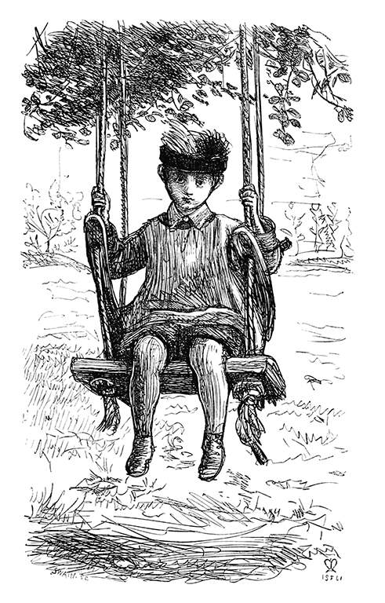

阅读
电子文学 » 以数字形式创作和呈现的文学作品，通常利用计算机技术和网络平台进行创作、发布和传播。它包括互动小说、超文本小说、数字诗歌、网络文学等多种形式，强调读者的参与和互动性。
阅读日记
2024 » 发现了几本新书。
2025 » 今年的阅读记录。
畅销书排行榜
List of best-selling books » 一些值得阅读的畅销书籍

电子文学 » 以数字形式创作和呈现的文学作品，通常利用计算机技术和网络平台进行创作、发布和传播。它包括互动小说、超文本小说、数字诗歌、网络文学等多种形式，强调读者的参与和互动性。
2024 » 发现了几本新书。
2025 » 今年的阅读记录。
List of best-selling books » 一些值得阅读的畅销书籍